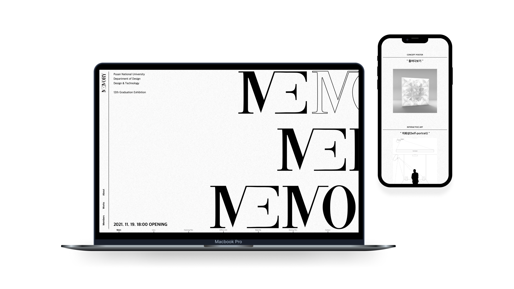
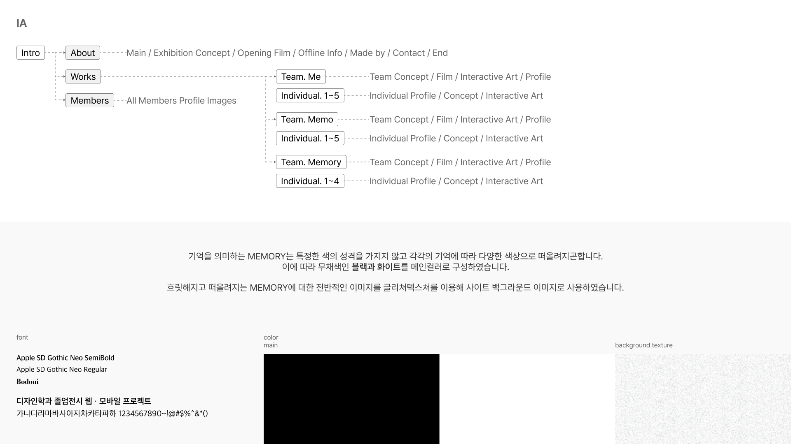
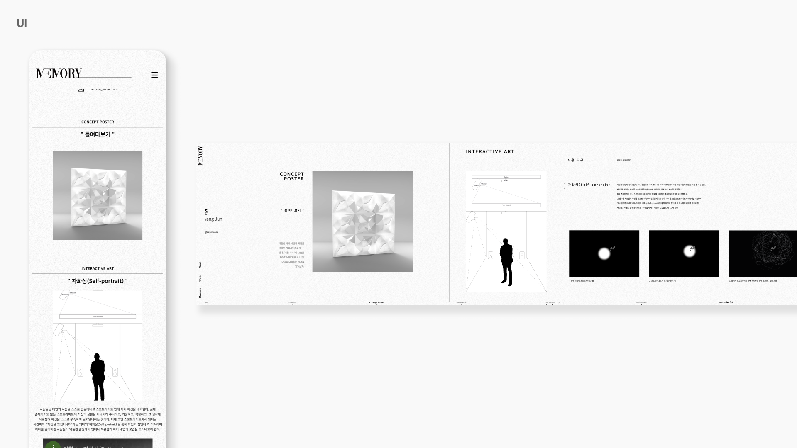

Subin Park
DESIGN
WEBMOBILE
MEMORY
부산대학교 Design&Technology 전공 졸업전시회 웹사이트를 제작하였습니다.
“MEMORY”라는 단어에 내포되어 있는 또 다른 단어들인 [ME] [MEMO] [MEMORY]를 활용한 웹사이트를 통해 졸업자의 작품을 기록하고 관객들과 소통하고자합니다.
팀원 구성: 기획, 디자인, 개발 총 5명 분담
프로젝트 기간: 2021.03-10
  